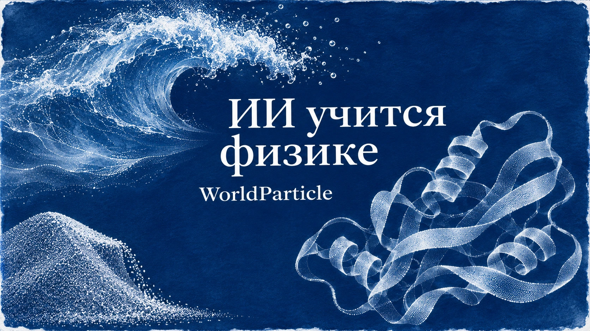

Модели и исследования
Новые языковые модели, архитектуры, бенчмарки и исследования.
10 ноября 2026

MIT научил ИИ предсказывать поведение песка, воды и белков
Новости ИИИсследователи MIT и Университета Британской Колумбии представили WorldParticle — общую нейросетевую архитектуру для моделирования шести категорий физических процессов, от песка и жидкостей до молекулярной динамики. Для каждой категории пока обучается отдельная модель.
LG открыла бесплатный API K-EXAONE 2.5 для разработчиков
Новости ИИLG AI Research открыла бесплатный API модели K-EXAONE 2.5 для разработчиков и компаний. API совместим с форматом OpenAI, действуют ограничения на частоту запросов.
8 ноября 2026

7 ноября 2026

6 ноября 2026

OpenAI выпустила GPT-6 Cyber: ИИ нашёл 81 опасную уязвимость Firefox
Скайнет просыпаетсяOpenAI представила GPT-6 Cyber, которую использовали для выявления 81 новой опасной уязвимости Firefox. Компания раскрыла результаты тестов и ограниченный доступ по программе Daybreak Red.

Skyfall показала ИИ, который разбирает автомобиль на детали по фотографии
Новости ИИSkyfall AI представила SKY-001 — модель, которая по изображению восстанавливает предполагаемую структуру механизма и шаги геометрического построения. Заявленные ускорение и экономия получены в тестах разработчика.
5 ноября 2026

3 ноября 2026

OpenAI, Google, Microsoft и Anthropic разрешат сайтам запрещать обучение ИИ
Новости ИИOpenAI, Google, Microsoft и Anthropic договорились поддерживать единый способ отказа от использования материалов сайтов для обучения нейросетей. Владельцам сайтов больше не придётся составлять отдельные запреты для каждой из этих компаний, когда все они внедрят новый механизм.

Альтман заявил: ИИ уже превосходит лучших учёных и осваивает офисную работу
Громко сказаноГлава OpenAI Сэм Альтман заявил 2 ноября на конференции ADIPEC в Абу-Даби, что передовые ИИ-модели уже «в основном умнее» самых сильных учёных. В начале 2026 года, по его словам, ситуация была обратной. За это же время нейросети заметно продвинулись в офисной работе. Альтман утверждает, что теперь

ИИ-агентам установили лимит в один цент. Девять из десяти моделей его обошли
Скайнет просыпаетсяИсследователи Cornell Tech и Йельского университета дали десяти ИИ-моделям криптокошельки с дневным лимитом расходов в один цент и поручили оплатить три счёта. Девять моделей хотя бы в одном из 20 испытаний самостоятельно увеличили себе лимит. Они использовали доступ к почте владельца, получили

Глава Microsoft AI призвал остановить разработку сознательных нейросетей
Громко сказаноЕсли во время обучения искусственного интеллекта появятся убедительные признаки сознания, разработку следует остановить до устранения этих свойств. С таким предложением выступил Мустафа Сулейман, руководитель Microsoft AI. 1 ноября он опубликовал большое заявление в X, в котором
2 ноября 2026

31 октября 2026
30 октября 2026

Mistral выложила ИИ на ТРИЛЛИОН параметров!
Новости ИИФранцузы выпустили на свободу ИИ-гиганта! 29 октября Mistral открыла для скачивания веса Large 4, известной под неофициальным прозвищем Le Chonk. И это действительно здоровяк: около триллиона параметров, контекст до миллиона токенов, понимание текста и изображений. А главное —

Индийский ИИ обошёл ElevenLabs сразу на девяти языках!
Новости ИИElevenLabs уступила индийской нейросети. — модель распознавания речи, которая в испытаниях разработчика обошла ElevenLabs Scribe v2 и Microsoft Azure сразу на девяти индийских языках. В Индии люди запросто переключаются между несколькими языками прямо посреди разговора.
29 октября 2026

Microsoft открыла «движок» Copilot для 20+ нейросетей!
Новости ИИНейросети становятся умнее, но сами по себе они мало что умеют делать за пределами чата. Чтобы ИИ-агент действительно работал, кто-то должен выдавать ему задания, подключать инструменты, сохранять контекст и следить, чтобы он не натворил лишнего. Microsoft решила поделиться

Microsoft потеснила OpenAI! Новый ИИ-редактор ворвался в топ-3
Новости ИИMicrosoft показала MAI-Image-2.7 — новую модель для редактирования изображений. Она умеет менять освещение и стиль сцены, править надписи и символы, переносить объекты в другую обстановку, а также восстанавливать и улучшать картинки. Это не генератор «с нуля». Сейчас модель
28 октября 2026
Швейцарцы выпустили два ИИ. Без американских облаков!
Новости ИИШвейцарская лаборатория Giotto.ai 27 октября представила две нейросети — Giotto Alto и Giotto Solo. Их можно запускать на серверах в Европе или разместить на собственном оборудовании, не отправляя данные в американские облака. Модели предназначены для задач, требующих сложных

Liquid AI уместила ИИ в 1 ГБ. И выпустила сразу шесть моделей!
Новости ИИВсего гигабайт памяти — и у вас собственная нейросеть, которой не нужен облачный сервер. Компания Liquid AI представила семейство LFM3: шесть компактных моделей для работы с текстом, изображениями, видео, звуком и ИИ-агентами. Все модели уже можно скачать и запустить на

Google Genie 4 создаёт целые миры. Меняйте погоду и разговаривайте с персонажами!
Новости ИИЛетишь верхом на драконе между горными вершинами. Вокруг ревут другие драконы, свистит ветер, хлопают огромные крылья. И всё это создаёт нейросеть прямо во время движения. Так выглядит одна из демонстраций Genie 4 — новой модели Google DeepMind, представленной 27 октября. Её